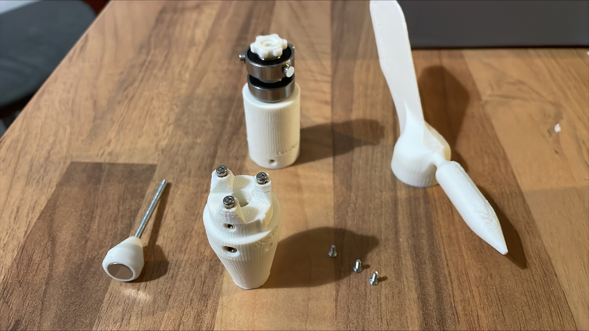
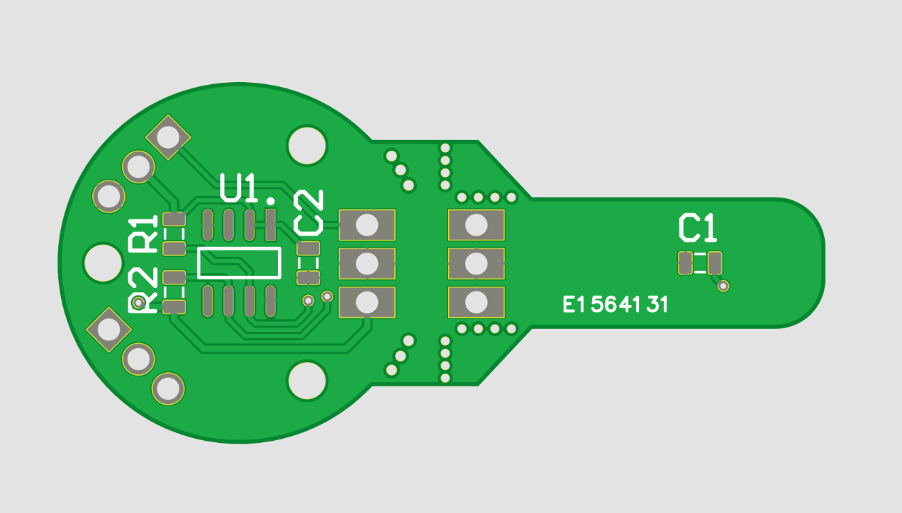
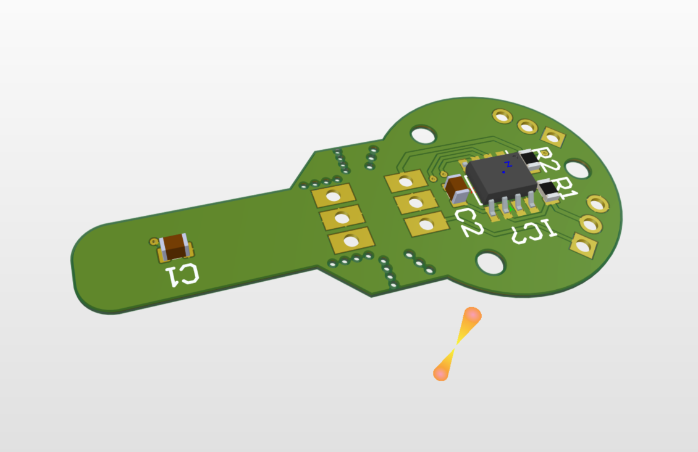

Aktuális időjárás
Budapest - Kármán
_Datum helye_
0°C


Budapest - Kármán
_Datum helye_
0°C

A projekt azzal a célkitüzéssel jött létre, hogy a Kármán Tódor Kollégiumban lakók a helyi aktuális
időjárásról kapjanak információt.
Ezért a projekt keretein belül készült egy időjárásállomás, amely az aktuális hőmérsékletet, páratartalmat,
szélirányt és szélerősséget képes mérni és megjeleníteni.

A design és mechanikai elemek teljes mértékben a nerdiy leírása alapján keszültek 3D nyomtatással ASA nyomtatószálból, hogy az időjárásnak is ellenálljon hosszútávon.

Az elektronika elkészítésének alapjául is nerdiy leírása szolgált, de ebben az esetben az elektronika áttervezésre és optimalizálásra került.

